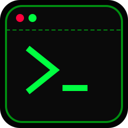

Kerangka kerja CSS/JS ringan. Kini dilengkapi Kanban Board, Masonry, Thread, dan Utility super lengkap untuk project bergaya Bunker/Satelit Anda.
Tidak perlu inline CSS. Gunakan class d-flex, w-100, m-0, p-3 seperti pada Bootstrap/Tailwind.
Sudah termasuk struktur Masonry, papan Kanban, dan Thread Connector untuk sistem yang kompleks.
Class t-retro-filter untuk mengubah gambar/avatar menjadi ala layar monokrom jadul secara instan.